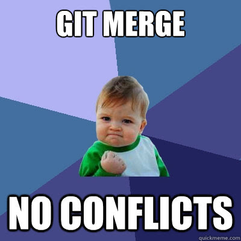
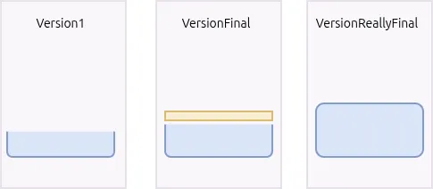
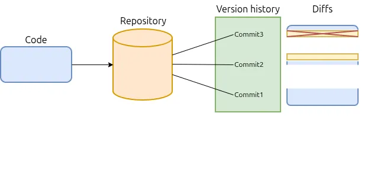
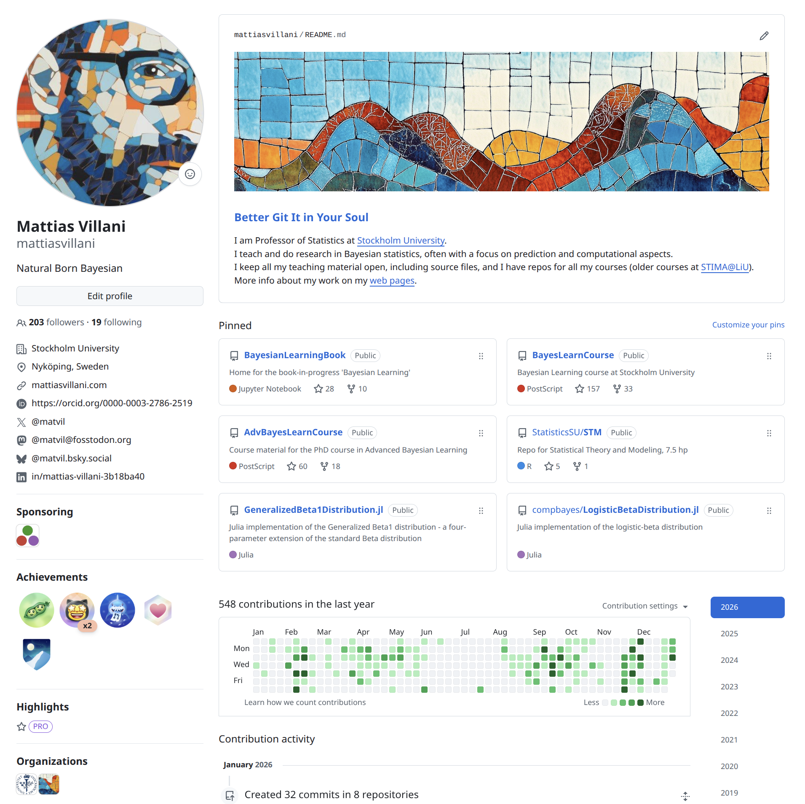
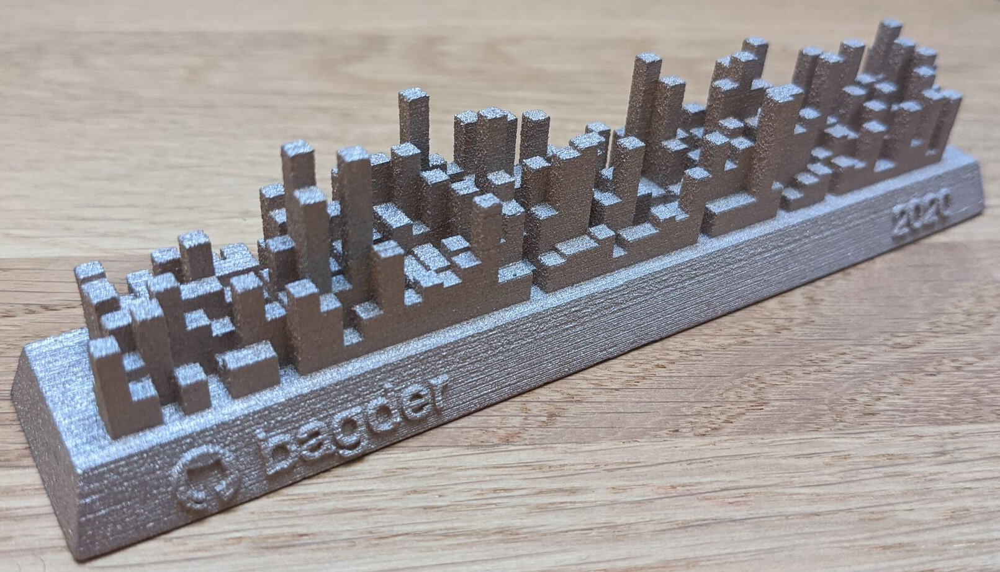
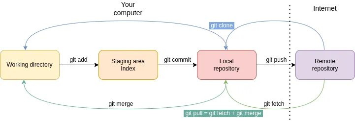
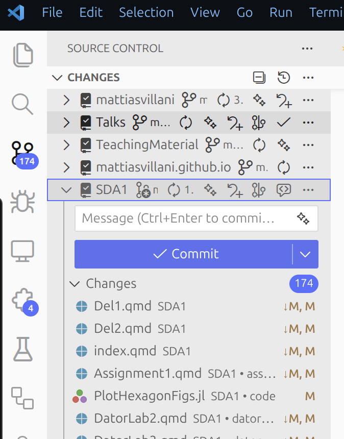
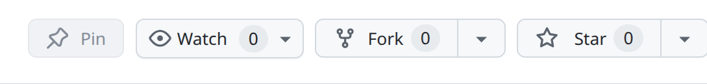

An Brief Introduction to Git
What Git (and Github) can do for you
Version control of your code and other files.
Allows you to go back in time. No more:
Thesis_v1.tex
ThesisFinal.tex
ThesisReallyFinal.tex
ThesisReallyReallyFinal.tex
Development. Test new code features with branches. Abandon or merge.
Collaboration. Work on the same code separately and merge later.
Share code (and show off code) (GitHub)
Git is part of our culture
 |
 |
 |
Source: Meme Git Compilation
What is version control?
Version control by a thousand folders 🤢

Version control the right way 😊 (but initially: 😵 )

Commits are well defined chunks of changes.
Knows what the changes were, who did the change, and when they were made.
Can revert a commit to undo changes.
Development in branches that can abandoned or used (merged).
What is Git?
- Git was famously created by Linus Torvalds (creator of the Linux kernel) in a couple of weeks.
Git is a decentralized version control system:
Users have local repository with full offline version control on their computers.
Can push to global repository (on Github) to collaborate with others.
Used by > 90% of developers according to Stack Overflow surveys.
Fast
What is GitHub?
Place for hosting repositories online.
Collaboration hub. A structured way to propose changes, review code, discuss, and approve before merging.
Forks, Issues, Pull request, activity etc.
Github actions for automated workflows (e.g. test your code on other operating systems)


Daniel Stenberg’s blog (creator of curl)
Git concepts and commands

Giting started
Download git from: https://git-scm.com/download
Make a free github account.
Basics: work from the terminal:
Linux/Mac: use the system terminal
Windows: use Git Bash from: https://gitforwindows.org/
Serious: Dedicated git software: Gitkraken and more.



Initialize git repository
> mkdir myrepo # create empty directory to hold your git repo
> cd myrepo # move to myrepo folder
> git init # initialize the git repo
Initialized empty Git repository in /home/mv/myrepo/.git/
> ls -a # list all files, incl hidden files and folders starting with .
. .. .gitAdd and commit a file
> echo "hello, git!" > file1.txt # Opens a new file and puts hello, git! on first line
> git status # shows that file1.txt is untracked by git
> git add . # adds all files to the staging area (index)
> git status # shows that file1.txt is staged
> git commit -m "added a first line to the project"
> git status # shows that the working directory is clean, nothing new to commitPushing to remote on Github
Go to github.com and make a free Github account.
On your Github page, click Repositories tab and then make a new repository by clicking  . Pick a name for the repo and optionally add a readme file and a license.
. Pick a name for the repo and optionally add a readme file and a license.
Copy the code from the section …or push an existing repository from the command line in the terminal:
> git remote add origin git@github.com:mattiasvillani/myrepo.git # adds a remote repo on github to your local repo. The repo gets the name origin, by convention.
> git branch -M main # renames your default branch to main
> git push -u origin main # link the local branch to the remote branch and push your files to your github repository's main branchYour local files and (only one for the moment) repository is now in sync with the remote repo on Github.
Pulling from a remote on Github
Go to your Github repo and refresh the page to see your files there.
Add a README.md file by clicking on the big green button. Commit the file directly on github.
In your terminal get the git info from your github repo with git fetch
> git fetch # downloads new commits from the remoteMerge the commit from remote to your local repo with git merge
> git mergeYou can do the fetch and merge steps as one with git pull.
git add .(note the period) adds all files in the current directory.git commit -am“this is a commit” adds and commits at the same time.
Working with Git in RStudio and VS code
RStudio:
Make an Rstudio project in your code folder (myrepo).
A Git tab should appear in the upper left window pane with all the things we did above: commit, pull, push etc.
VS code:
- click the source control icon in the left panel:

Github pages
Github lets you host webpages on github pages.
My web page at mattiasvillani.com is actually hosted on Github. Its adress is really mattiasvillani.github.io, I pay 20 USD a year for the domain name).
My workflow:
Make a Quarto website for a new course/project.
Use Quarto to build the web page.
Push the webpage to a Github repo.
Use Github pages to show the webpage.
(Use Github action to build the webpage automatically when doing a git push)
Working with branches
A branch (for example named
dev) lets you experiment with a new feature in your code without affecting yourmainversion (branch).> git branch # shows all branches wih a * on currently checkout branch > git dev # creates a new branch named dev > git switch dev # switches to (makes active) the dev branch > echo "hello, git on dev!" > file2.txt # makes a new file > git add . # staging all files, that is file2.txt > git commit -m "adding hello on dev" " # commit to local repoNotegit switchused be calledgit checkout, and that still works.Check your local folder in your File Manager. The file file2.txt is there. No surprise.
Now checkout the main branch again with
git switch main. Now check your File Manager again. file2.txt is not there!Checkout the dev branch again (
git switch dev). The file file2.txt is back!To push your branch to github, do this when
devis checked out> git push -u origin dev # pushes the dev branch to github and links the local repo branch dev to github branch devGo to github (refresh page) and see that you have two branches now (dropdown meny upper left corner).
If
devwas a successfully added feature, then merge thedevbranch intomain.> git switch main > git merge dev # file2.txt is now part of main > git push # pushes the changes to github > git branch -d dev # clean up by deleting the dev branch > git push origin --delete dev # if you also want to delete on github
Some more git
Sometimes you try to merge two files that conflict. You then have to resolve the conflict. This can be a headache, but basically means that you have to decide for each change, which file “wins”. There are merge tools for this.
The file
.gitignore(create it in your repo) can be used to decide which files git will ignore (not track). For example*.Rprojor.DS_Storegit logshows history (commits)git log --oneline --graph --allgives more info, also on existing branches.git clone git@github.com:mattiasvillani/myrepo.gitmakes copy (clone) of a repository on github to your current directory.You can fork a github repository, meaning that that github repository is copied to your github with links to the original repository.
Forking is a way to suggest changes to someones code (make a pull request (PR)), which they can then review and hopefully merge into their repository.
